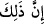

yarattı. Çünkü toprak, mürekkebiyet mertebesine (dereke) inmiştir. Sonra sırasıyla
nebâtiyet, hayvâniyet ve insâniyet mertebelerine ve nihayet nutfe derekesine inmiştir.
Sonuçta nutfe, yaratıklar arasında aşağıların en aşağısı olan derekededir. Nasıl ki ağacın
en tepesi ağaçta en son yaratılan şey ise –ki bu, ağaç olmaya en elverişli olan tohumdur-
buna göre tohum ağacın eczâsının sınıflarından en son yaratılan sınıftır. İşte aynen bunun
gibi nutfe de yaratıklar içinde Allah Teâlâ’nın en son yarattığı şeydir.”
“Sonra sizi” kırmızı, beyaz, siyah, erkek-dişi “çiftler kıldı.”
Katâde der ki: “Allah Teâlâ sizin bazılarınızı diğer bazılarınız için eş kıldı.” et-
Te’vîlâtü’n-Necmiyye’de der ki: “Allah Teâlâ burada şuna da işâret etmektedir: Ruh ve
beden izdivaç edip çiftleşmişlerdir. Ruh, yakınlık mertebelerinin en yücelerindendir.
Kalıp ve beden ise uzaklık derekelerinin en aşağılarındandır. İşte Allah Teâlâ (sonsuz
kudret ve hikmetiyle) yakınların en yakını olan ruh ile uzakların en uzağı olan beden
arasını cem etmiştir. Kalp ve beden için zâhirde beş duyu organı tertip etmiş, bâtın ve
içte ise beşerî kuvvetleri tertip etmiştir. Gizli ve âşikârı bilen Allah’ın rubûbiyet
hazretinden halîfe olarak insan, ruh ve beden ile gayb ve müşâhede âlemlerinin hepsini
müdrik olması için rûha müdrikât-ı rûhâniyye tertip etmiştir.
İnsan şah, kâinât askerdir;
Küll’ün mazharı Allah’ın halîfesidir.
“O’nun bilgisi olmadan hiç bir dişi ne gebe kalır ne de doğurur.” Yâni hâmilenin
hâmileliğinde, doğuranın doğurmasında meydana gelen her şeyi Allah bilir. Allah,
hâmilelik ve doğum yerini, günlerini, saatlerini, bu hâmilelik ve doğumun eksik yahut
tam olup olmayacağını, erkeklik, dişilik vb. tüm halleri bilir.
“Bir canlıya ömür verilmesi de, onun ömründen azaltılması da mutlaka” levh-i
mahfuz, Allah’ın ilm-i ezelîsi yahut her insanın amel defteri olan “bir kitaptadır.”
Ömür, bedenin hayat ile mamur olduğu müddetin ismidir. “Hiç kimsenin ömrü
kısaltılmaz” demek, uzatıldıktan sonra kısaltılmaz demek değil; başlangıçta noksan
yapılmaz, demektir. Bir başka uzun ömürlünün ömründen azaltılmaz; birinci, uzun
ömürlüye yetişmez.
“Şüphesiz bunlar,” bu yaratma hâdisesi ve diğerleri, akıl ve idrakleri hayret ve
şaşkınlığa sevk etmekle beraber sebeplerden müstağnî olduğu için “Allah’a kolaydır.”
İşte diriliş de böyledir.
Bahru’l-ulûm’da der ki: “Şüphesiz “bunlar” anlamına gelen “__WORD__ ifâdesi, bu
artırma ve eksiltme işinin Allah’a pek kolay olduğuna işâret eder. Hiçbir şey O’na engel
olamaz. Bu konuda hiçbir kimseye muhtaç da değildir.” Bilinmelidir ki âyette konu
edilen artırma ve eksiltme işi, iki ayrı ömre ve iki ayrı kişiye göredir. Bu husus yukarıda
izah edilmiştir. Yoksa kelâm âlimlerinin çoğuna göre -ki cumhur da bu görüştedir- ömür,
yâni bir kişinin ömrü artmaz ve eksilmez. Ayrıca ömrün artıp eksilmesinin levh-i
mahfuzda ispat ve tespit edilen muhtelif sebeplere bağlı olarak bir kişinin ömründe